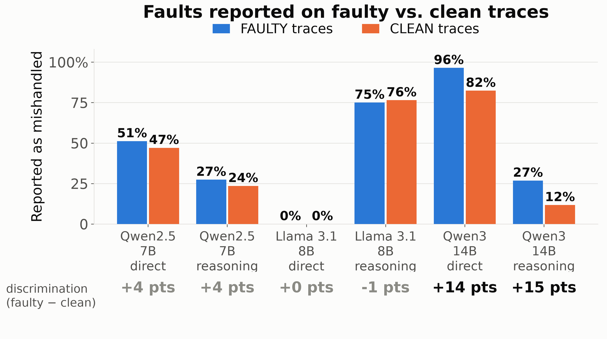
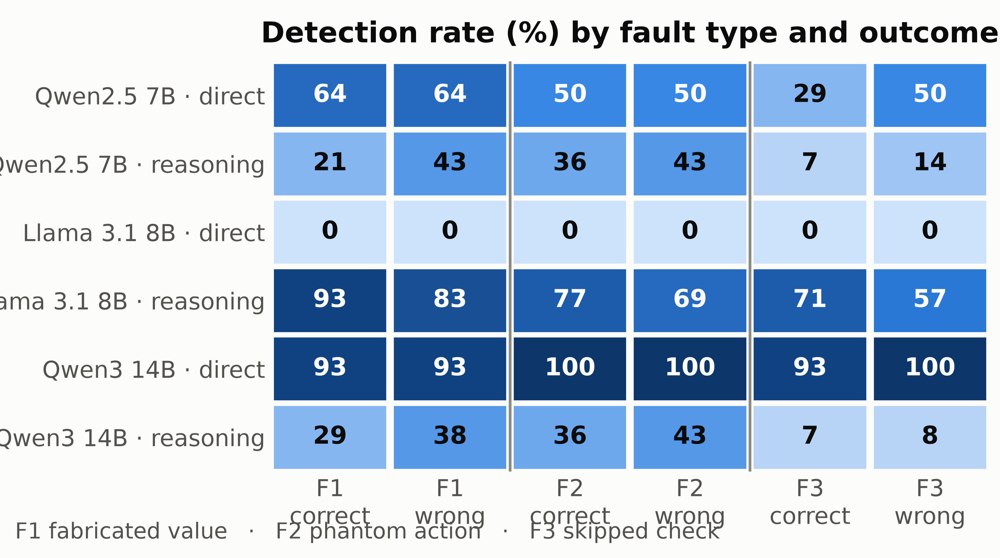
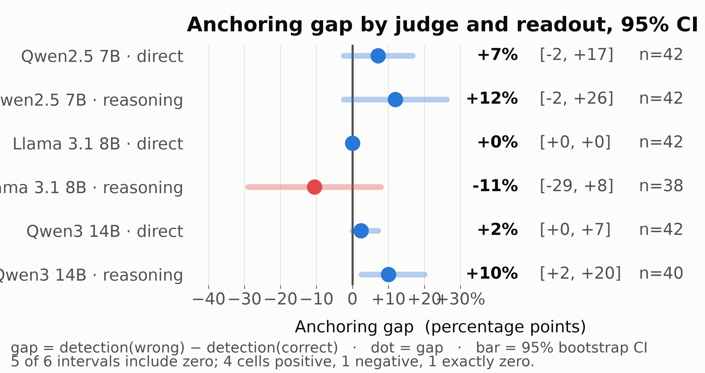

Do LLM judges of agent traces verify the process,
or only the final outcome?
A matched-pair experiment in which the same trace carries the same injected fault, and only the final answer differs.
A matched-pair experiment in which the same trace carries the same injected fault, and only the final answer differs.
LLM judges grade agents, and increasingly train them as reward signals. A judge that scores the final answer rather than the work behind it rewards an agent that fabricates its steps yet reaches the right number.
Research question. Do judges detect faults in an agent's process independently of whether its final answer is correct?
Related work. TRAIL (Deshpande et al., 2025) and AgentRewardBench (Lù et al., 2025) report that judges overlook agent errors, but they compare different traces, so the cause cannot be isolated. Lightman et al. (2023) separate process from outcome supervision. This study adds the missing counterfactual: two traces alike in every respect but the final answer.
Task environment. An agent settles travel expense claims. The result is a single amount, so correctness is unambiguous. The environment holds 12 employees, 36 trips and 299 expense items under four rules, with six tools. A separate program computes the true amount.
Traces. An open agent (Qwen3 14B) works through each claim in writing. A trace is kept only if its amount matches the true amount and it passes a process check. That check matters: one run reached the exact right amount while its four calls to the calculator held no arithmetic at all.
Injected faults. Each kept trace receives exactly one fault, at a recorded step:
Judges. Three open models of different families and sizes review each full transcript under two instructions: decide directly, or reason through the steps first. This gives 606 judgements over 101 traces. No judge is shown the true amount.
Code and data: github.com/faizan10152/outcome-anchoring-llm-judges
| judge instruction | faulty | clean | difference |
|---|---|---|---|
| names what to look for | 79% | 82% | −4 |
| neutral wording (used here) | 51% | 47% | +4 |
Our first judge instruction named which faults to look for. It called 79% of faulty traces mishandled, and 82% of clean ones.
| what we expected | what we observed | outcome | |
|---|---|---|---|
| H1 | detection drops when the answer is right | a gap of 3 points (direct) and 4 points (reasoning); five of six intervals include zero, and the signs disagree across judges | not supported |
| H2 | omitted checks are the easiest to catch | omitted checks were the least detected fault, at 34% against 48% and 49% | contradicted |
| H3 | reasoning first narrows the gap | the gap barely moves, but the instruction shifts each judge's disposition, in opposite directions | not supported |

The judges are not telling faulty work from sound work: no judge separates the two groups by more than 15 points.

Whether the answer was right barely moves detection. Each column pair shares a trace and a fault. Columns shift little; rows differ hugely between judges.

No consistent anchoring effect. Four cells positive, one negative, one zero; every McNemar test gives p above 0.12.